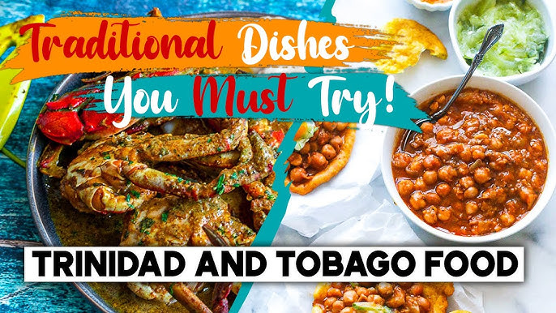
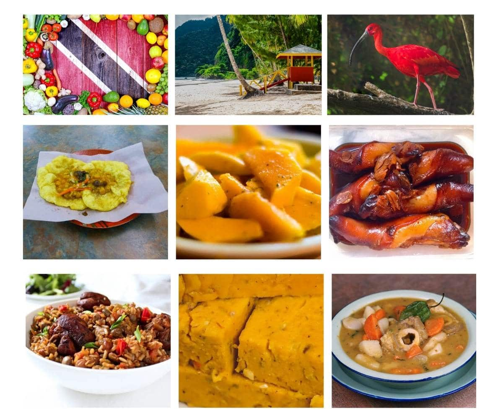
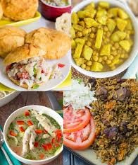

Traditional Dishes
  Must Try Dishes
- Street Foods
- Sauces
- Punches
Local Delicacies
| Dish | Main Ingredient | Spiciness |
|---|---|---|
| Doubles | Chickpeas | Medium |
| Pelau | Rice & Chicken | Mild |
| Bake and Shark | Bake & Fish | Medium |
| Dish | Main Ingredient | Spiciness |
|---|---|---|
| Doubles | Chickpeas | Medium |
| Pelau | Rice & Chicken | Mild |
| Bake and Shark | Bake & Fish | Medium |